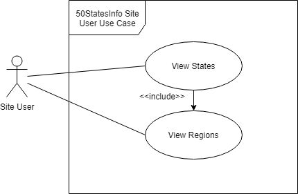

Maintain and update information about the 50 states
Maintain and update information on each region in the U.S.
Nonfunctional Requirements:
Usability Requirements:
User interface shall be the same as it is for an ordinary website where the user will use their mouse or mousepad to use the scroll bar on the right-hand side of the webpage
The menu format for the website will have a nav bar on the top of the webpages
The color scheme for the website will be a mixture of bright and neutral colors to attract an audience of all ages
For now, there will not be multilingual support, but it could be incorporated later
Reliability Requirements:
The system should be extremely dependable, and there will only be service outages when the website needs to be updated
The website will experience service outages every Sunday to update new information if needed on the website
The system will detect when the service outage will be coming up by emailing users about the outage that is about to take place
Performance Requirements:
User response time should be required to have at least a one-half-second response time to all button presses
Server should be able to support about 100 simultaneous client sessions (with the same response time)
Security Requirements:
The system will use secure HTTP for communication amongst users and the server
Design Constraints:
For now, there are seemingly no hardware constraints or software constraints
Implementation Requirements:
Programming language that will be used is PHP
The tools that will be used alongside PHP will be CSS, HTML, and a database that will created by using phpMyAdmin
Documentation will be implemented using comments in the PHP code alongside handwritten documentation of my thoughts about the project while it is occurring. This can then be used to change certain aspects of the project as I see fit
The level of detail will be high, as I want the project to cater to a large audience
The specific communication protocol that will be used will be UML
Prioritize Requirements:
What is absolutely required?
The requirements that are absolutely required are the Functional Requirements, Usability Requirements, and Implementation Requirements for the creation of this website
It is of utmost importance that these functions are requested by the users and that these requirements meet the scope of the system and do not allow for scope creep
Use cases
Use case tables
Use case diagrams

Use case descriptions
View region
The user selects a region from the main navigation menu of the website.
The system registers the task and displays information about the region to the user.
View states
The user selects a region from the main navigation menu of the website.
The system registers the task and displays information about the region to the user.
The system gathers the information for the states in the given region.
The system displays the information of the states to the user.
Add description
The website admin goes into the database
The website admin adds a description to a state
The website admin then updates the database
Delete description
The website admin goes into the database
The website admin deletes a description from a state
The website admin then updates the database
Add state flag
The website admin goes into the database
The website admin adds state flag information to a state
The website admin then updates the database
Delete state flag
The website admin goes into the database
The website admin deletes state flag information to a state
The website admin then updates the database
Add state flower
The website admin goes into the database
The website admin adds state flower information to a state
The website admin then updates the database
Delete state flower
The website admin goes into the database
The website admin deletes state flag information to a state
The website admin then updates the database
Extract "things" from the requirments
List of events the system responds to
The system responds to a user clicking on links on the website and providing the corresponding
pages for the user to view.
The system responds to a user selecting a region from the main navigation bar on the
website to display on the corresponding web pages.
The system responds to when the user selects a region to display the appropriate states
on each region webpage.
The system responds when the web admin adds a description to a state by updating that information.
The system responds to when the web admin deletes a description from a state by removing
that information and updating it.
The system responds when the web admin adds a state flag to a state updating that information.
The system responds to when the web admin deletes a state flag from a state by removing that
information and updating it.
The system responds when the web admin adds a state flower to a state updating that information.
The system responds to when the web admin deletes a state flower from a state by removing that
information and updating it.